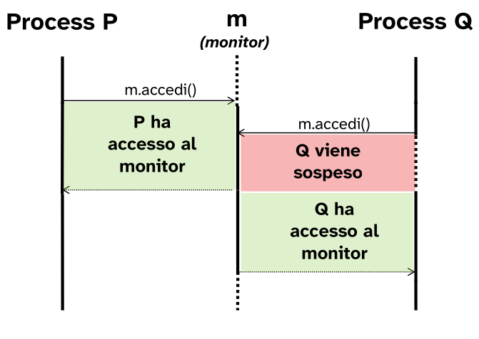
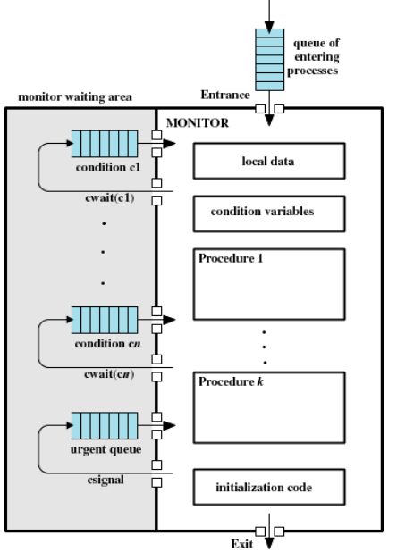
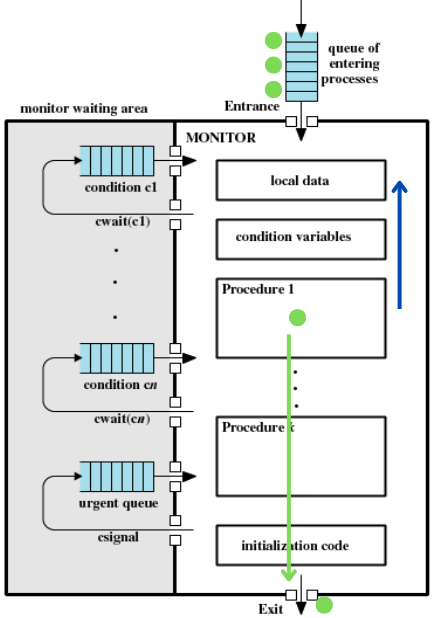
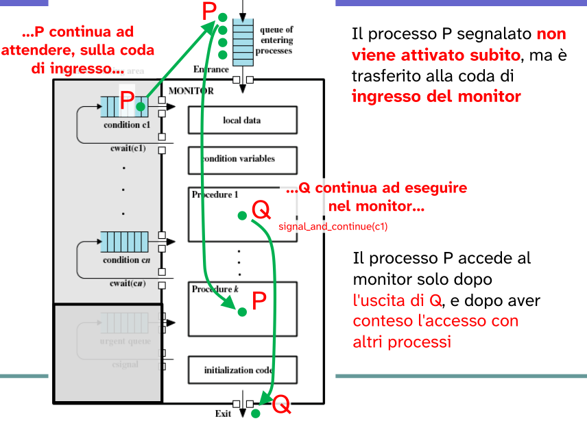

Monitor
Il monitor è una struttura sintattica che opera su una risorsa condivisa (shm) gestendone l’accesso e la sincronizzazione tra processi/thread concorrenti.
Un monitor abbina un insieme di operazioni ad una struttura dati (risorsa) condivisa tra processi.
Il costrutto monitor è sintatticamente simile al costrutto class ma è utilizzato per la gestione delle risorse condivise tra processi. Quindi non possiede risorse locali, come avviene per le classi, ma delle risorse condivise.
Il monitor stesso sarà una risorsa condivisa.
Lo scopo di un monitor è quello di facilitare la programmazione condivisa. Infatti permette di creare politiche di accesso alle risorse condivise tramite delle condizioni che implementeremo (variabili di condizione).

Un monitor lo possiamo vedere quindi come tipo di dato astratto contenente variabili di condizione e procedure che implementano le politiche di accesso ad una risorsa condivisa (shm).
In c implementiamo un TDA proprio con una struct che porta con se il concetto di classe dove ogni membro è pubblico.

-
Risorsa: consiste nella risorsa condivisa tra i vari processi che la competono;
-
Stato della risorsa: consiste in altri variabili membro utili per la gestione come:
- puntatore di testa/coda;
- pid dell’ultimo processo ad aver effettuato un modifica sulla
shm; - …
-
Funzioni membro (pubbliche): per accesso alla risorsa da parte dei processi, quindi procedure pubbliche;
-
Funzioni membro (private): per uso interno al monitor.
Strategie di controllo
La politica di accesso impone che:
- un solo processo alla volta può avere accesso alla risorsa condivisa (competizione);
- i processi devono seguire un determinato ordine di accesso alla risorsa (cooperazione).
Competizione
Quindi per il primo punto: le funzioni pubbliche del monitor sono esegute in modo mutuamente esclusivo.
Appunto perché queste funzioni operano sulla risorsa critica che viene condivisa tra i processi. Significa che per eseguire una qualsiasi operazione definita nel monitor un processo, a monte, deve chiedere l’accesso a quest’ultimo.

m è l’istanza di un monitor che gestisce l’accesso ad un risorsa critica. Quindi i processi per poter operare sulla shm chiamano una procedura di accesso definita dal monitor.
Nel caso il monitor sia già assegnato ad un altro processo, il processo che tenta di accedervi viene sospeso fin tanto che la risorsa monitor non viene rilasciata dal processo detentore.
Quindi in questo modo solo un processo per volta può avere accesso alla risorsa condivisa poiché l’accesso viene gestito dai metodi pubblici del monitor.
Come implementare i metodi pubblici di un monitor?
Attraverso:
-
librerie di funzioni del linguaggio di programmazione
Dobbiamo implementare delle librerie ad hoc per complementare quello che ci offre il linguaggio di programmazione; per gestire poi la competizione e cooperazione.
In
cimplementiamo metoti comeenter()eleave_monitor()per permettere l’operazione mutuamente esclusiva sulla risorsa; -
parole chiave del linguaggio di programmazione
Esempio chiave è JAVA, che utilizza un monitor implicito che attraverso la parola chiave Synchronize permette a metodi di esser eseguiti in maniera mutuamente esclusiva.
Monitor M {
void metodo1(){
enter_monitor();
// operazioni su risorsa
leave_monitor();
}
}
Per la competizione il monitor fa uso di semafori lock per gestire la mutua esclusione: per l’entrata sul monitor e l’uscita sul monitor.
Cooperazione
Nella gestione della cooperazione, i processi si sospendono se non è verificata una “condizione logica” di accesso.
Per la gestione della cooperazione si introduce un tipo di variabile detta variabile condition, che determina la sospensione di un processo nel momento in cui una condizione non è verificata.
var_cond x;
Tale variabile condition definisce due metodi:
x.wait_cond()sospende il processo chiamante…- … fino a che un altro processo esegue
x.signal_cond().
Simile ai semafori ma le operazioni hanno un comportamento diverso.
Avremo tante variabili condition quante sono le condizioni per cui un processo deve esser sospeso per cooperazione
→ ogni variabile condition è associata ad una condizione logica.
Monitor M {
var_cond x;
var_cond y;
void metodo1(){
enter_monitor();
if/while(!condizione_logica) //tale condizione è legata a x
x.wait_cond();
// operazione su risorsa
y.signal_cond();
leave_monitor();
}
}
Questo esempio potrebbe benissimo implementare il paradigma produttori/consumatori se associassimo ad x la condizione che riguarda lo spazio disponibile ed a y la condizione di messaggio disponibile.
Ovviamente nel momento in cui un processo viene sospeso, questo rilascia il monitor per permettere ad altri processi di entrare.
Nell’esempio è presente if/while perché ci sono diverse implementazioni possibili per l’operazione di signal_cond() che devono essere gestite in modo diverso.
Quindi per ottenere una corretta cooperazione tra processi e quindi un ordine di accesso:
- in ogni metodo del monitor, il processo chiamante controlla se è soddisfatta una condizione logica;
- se la condizione non è soddisfatta, il processo chiamante viene sospeso;
- nel momento in cui viene sospeso rilascia anche la risorsa monitor, in modo che un altro processo possa entrare ed eseguire operazioni che potrebbero portare alla sua sospensione oppure all’attivazione dei processi sospesi su una condizione.
Monitor - paronamica
Possiamo schematizzare un monitor in questo modo:

- Sono presenti diverse code in cui sono contenuti i processi che si sono sospesi e attendono si essere riattivati.
- Procedure che un processo piò effettuare sulla
shmin modo esclusivo. - local data in cui sono contenute le strutture condivise.
- condition variables sono la sezione in cui sono dichiarate le variabili condition.

Il processo entra nel monitor chiedendo di eseguire una procedura in mutua esclusione. Quindi dopo la chiamata alla procedura di interesse viene chiamata una enter_monitor().
All’interno della procedura potrebbe esserci una condizione che potrebbe portare il processo a sospendersi nel caso in cui non sia verificata; condizioni associate a variabili condition.
→ Per ogni variabile condition oltre ad una condizione logica è associata una coda in cui saranno memorizzati tutti i processi che si sono sospesi per il mancato soddisfacimento della condizione logica.
Quindi nel momento in cui è da gestire una cooperazione le procedure controllano, tramite le variabili locali, se la condizione di sincronizzazione è valida (es. buffer vuoto, buffer occupato).
Se la condizione di sincronizzazione è valida, il processo completa l’esecuzione e libera il monitor con una chiamata leave_monitor().
Condizione non valida:

Se al momento del controllo la condizione di sincronizzazione non è valida, il processo si sospende volontariamente usando la condition variables associata alla condizione che non è stata soddisfatta.
Mentre è in attesa, il monitor diventa libero, poiché il processo che si è sospeso deve aver rilasciato il monitor prima della sospensione con una leave_monitor(), e quindi è accessibile ad altri processi che attendono di entrare.
Note su condition variables
var. condition ≠ semafori
wait_condition() ≠ wait_sem()
signal_condition() ≠ signal_sem()
La wait_cond() sospende sempre il processo chiamante.
→ Nei semafori, con wait_sem(), la sospensione era condizionata allo stato interno del semaforo
La signal_cond() non ha alcun effetto se non vi è alcun processo in attesa sulla condition variables.
→ Nei semafori invece signal_sem() aveva sempre un effetto, ovvero quello di incrementare lo stato del semaforo.
Diverse implementazioni di signal_cond() (semantica)
A fronte di questa problematica abbiamo diverse implementazioni della procedura signal_cond().

Supponiamo che P acceda al monitor e debba eseguire una procedura in mutua esclusione, ma non soddisfa una condizione definita per la cooperazione.
→ Il processo spontaneamente si sospense utilizzando wait_cond() sulla condition variables associata a tale condizione.
Nel momento in cui P si sospende questo rilascia la risorsa monitor agli altri processi in attesa. Quindi il prossimo processo schedulato in attesa, Q, entra nel monitor ed esegue una procedura che potrebbe comportare l’aggiornamento dello stato della risorsa.
→ La condizione di sincronizzazione che ha portato P a sospendersi viene soddisfatta, quindi tale processo può continuare la propria esecuzione
Il processo Q dopo la modifica che ha portato la risorsa ad essere pronta per P, riattiva P che ritorna pronto.
PROBLEMA: P e Q non possono eseguire entrambi nel monitor, si violerebbe la mutua esclusione.
A questo problema non esiste una soluzione unica.
Diversi sistemi attribuiscono comportamenti (semantica) diversi alle primitive wait_cond()/signal_cond().
Prima soluzione: signal and wait
signal_and_wait prevede:
- il processo segnalato
Priprenda immediatamente l’esecuzione; - il processo segnalante
Qvenga sospeso.
Q viene sospeso per evitare che possa modificare nuovamente la condizione di sincronizzazione per cui P si è sospeso.
Utilizzo della primitiva wait_cond() in questa semantica di signal_cond():
- il processo segnalato è il primo ad eseguire;
- al risveglio, il segnalato ha certezza di trovare verificata la condizione di sincronizzazione, quindi non è necessario che questo la verifichi nuovamente.
Quindi lo schema di uso della wait_cond() sarà:
if (!B) { // B = condizione di sincronizzazione
cv.wait_cond(); // cv = var.condition, abbinata a B
}
// accesso alla risorsa...
In questo modo quando P entra per primo nel monitor, prematuramente (la condizione di sincronizzazione non è ancora valida), per cui si sospende.
Il processo Q opera sulla risorsa condivisa (es. buffer di stato) facendo in modo che venga soddisfatta la condizione di sincronizzazione, quindi effettua la signal_cond() sulla condition variable che comporta la sua sospensione.
Quindi Q dovrà uscire dalla risorsa monitor con una leave_monitor().
→ Q attende l’uscira di P e compete con altri processi per rientrare nel monitor.

signal_and_wait di Hoare
Una diversa soluzione di signal_and_wait potrebbe essere quella di Hoare.
In questa soluzione, il processo Q ha la precedenza sugli altri processi in attesa di entrare nel monitor.
Quindi Q non si sospende sulla coda in cui sono presenti tutti gli altri processi che sono in attesa, ma su una coda separata urgent_queue.

Tale soluzione di Hoare è un caso particolare di signal_and_wait, detta signal_and_urgent_wait.
Prevede che il processo Q abbia la priorità su ogni altri processi che intendono entrare nel monitor.
Questa soluzione si può ottenere sospendendo il processo Q dopo la signal_wait() su una cosa detta urgent_queue, separata dal mutex.
mutex: meccanismo di mutua escluzione che permette l’accesso al monitor ad un solo processo per volta.
Seconda soluzione: signal and continue
signal_and_continue:
- privilegia il processo segnalatore rispetto al segnalante;
- il processo
Qsegnalatore prosegue la sua esecuzione, mantenendo l’accesso esclusivo al monitor.
Quindi dopo il risvegli di P sospeso per il mancato soddisfacimento della condizione di sincronizzazione, questo viene nuovamente sospeso questa volta nella coda del mutex (insieme a tutti gli altri processi che in attesa di entrare nel monitor).
Per semplicità di implementazione il monitor signal-and-continue non usa la coda urgent.

Essendo che P compete con gli altri processi per accedere al monitor potrebbe verificarsi la situazione in cui ad esser schedulato prima di P è K, che entra nel monitor una volra che Q lo ha rilasciato.
In qeusta sistuazione potrebbe accadere che K modifichi nuovamente la risorsa (le strutture contenute in local data) e quindi potrebbe far in modo che la condizione di sincronizzazione per P sia non più verificata.
Quindi è necessario che una volta che P rientri all’interno del monitor verifichi nuovamente la condizione di sincronizzazione.
→ Non abbiamo più la certezza che nel momento in cui P rientra nel monitor la condizione sia verificata.
Questo si può tradurre anche in una condizione di attesa indefinita per P (starvation).
Quindi in questo caso lo schema di uso della wait_cond() su una condition variable sarà:
while (!B) { // B = condizione di sincronizzazione
cv.wait_cond(); // cv = condition variable associata a B
}
// in questo caso è possibili che wait_cond() venga chiamata più
// volte prima che P possa accedere alla risorsa
P non ha la certezza che la condizione sia verificata, quindi deve controllare ogni volta che riottiene l’accesso al monitor.
signal_all
signal_cond() riattiva al più un solo processo.
Nel momento in cui si vuole risvegliare invece tutti i processi sospesi su una condition variable è possibili utilizzare la variante:
signal_all();
Tutti i processi risvegliati vengono messi nella entry_queue, dalla quale uno alla volta potraà rientrare nel monitor.

Confronto: signal-and-wait vs signal-and-continue
La semantica di signal-and-wait richiede che venga chiamata precisamente quando il processo segnalato deve essere svegliato.
→ ovvero nel momento in cui è soddisfatta la condizione di sincronizzazione.
La semantica di signal-and-continue (e signal-all) è più robusta:
- il processo segnalante può chiamarla anche quando non è sicuro di se/quali processi risegliare;
- saranno i processi risvegliati a controllare se possono eseguire, oppure sospensersi.
Granularità: semaforo vs monitor
Entrambi, sia monitor che semafori, sono dei concetti necessaria per la gestione di situazioni di cooperazione o competizione tra processi su una risorca condivisa.
Sono simili nell’utilizzo ma hanno tante differenza sia rispetto alla robustezza che alla granularità.
In particolar modo i semafori hanno una granularita fine, molto bassa, proprio perché gestiscono la mutua esclusione a livello di singole operazioni.
Mentre i monitor hanno una granularità più alta: il controllo non è sulla singola operazione sulla risorsa condivisa, ma sull’intera risorsa condivisa.
→ infatti nell’implementazione del problema produttori/consumatori con buffer di stato la modifica di questo a fine di un operazione (IN_USO → OCCUPATO/LIBERO), che sia di scrittura o lettura, deve essere eseguira all’interno del monitor (bloccando quindi gli altri processi che desiderano accedervi).
Mentre con i semafori la modifica sul buffer di stato IN_USO → OCCUPATO/LIBERO non era inclusa nella sezione critica, non ostacolavamo gli altri processi ad operare sulla risorsa.
Invece parlando di robustezza i monitor sono sicuramente molto più sicuri per via del loro livello di astrazione maggiore. Tutti le operazioni sulla memoria condivisa sono contenute all’interno del monitor. (possiamo dire che il monitor è un wrapper della shm)
Mentre per i semafori la gestione è esplicita, quindi è più alto il rischio di eventuali deadlock.